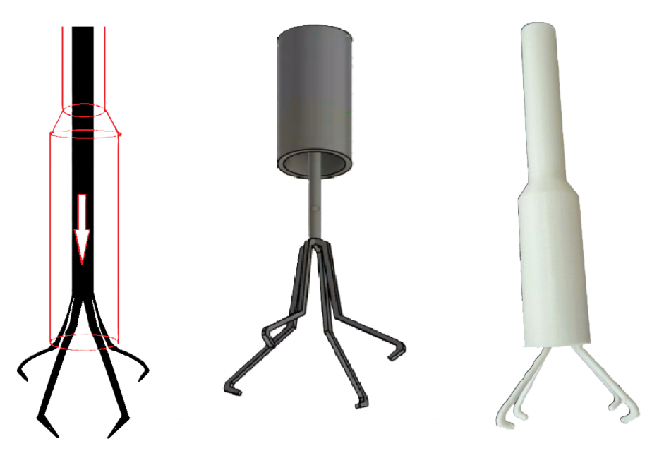
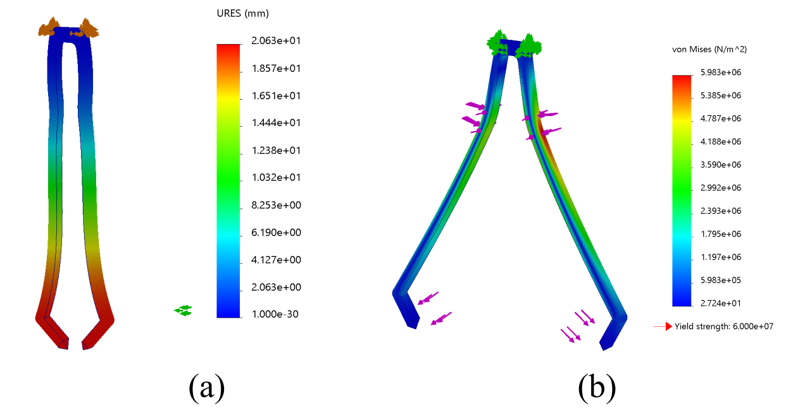
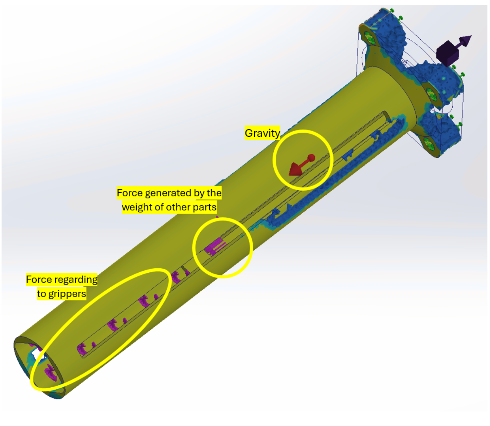

SOLIDWORKS · FEA · DfAM · FDM
4-Claw Compliant Gripper for Assembly Lines
Team project — designed and simulated with a four-person team.




Project Overview
This four-person team project focused on designing a 3D-printed four-claw compliant gripper for handling small components in automated assembly lines. The mechanism was developed in SolidWorks using smart geometry, with a rotational-to-linear screw mechanism used to actuate the claws. Finite Element Analysis was performed to evaluate stresses and deformation, while topology optimization was used to reduce material while preserving functional interfaces. The design was manufactured in PLA using FDM and tested as a functional prototype. The reported results achieved up to 60% mass reduction of the additively manufactured components and a 9.4% reduction in total system weight, while maintaining safety factors between 2.33 and 47.72. The prototype was able to grasp objects smaller than 50 mm, move them to another position and release them.